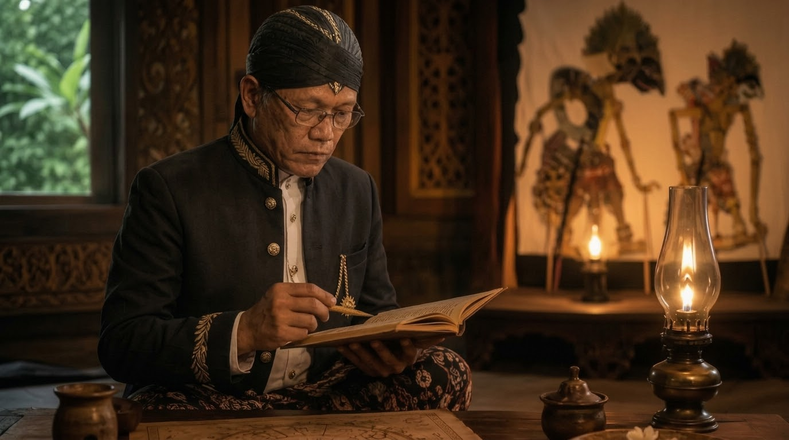

JATINING DHIRI DAN KESADARAN

Memahami diri merupakan salah satu persoalan mendasar dalam kehidupan manusia. Manusia dapat mengenali tubuhnya, mengingat perjalanan hidupnya, memahami sifat-sifatnya, dan mengetahui berbagai pengalaman yang pernah dilaluinya. Namun, semua pengenalan tersebut belum otomatis menjawab pertanyaan mengenai hakikat dirinya.
Manusia masih dapat bertanya: apakah aku hanya tubuh? Apakah aku adalah pikiranku? Apakah aku adalah perasaanku? Apakah aku adalah seluruh pengalaman yang pernah terjadi dalam hidupku? Pertanyaan tersebut membawa pembahasan kepada Jatining Dhiri.
Dalam perspektif Kawruh Sejati, Jatining Dhiri tidak dapat dipersempit menjadi identitas sosial ataupun keadaan psikologis. Jatining Dhiri berkaitan dengan hakikat keberadaan diri manusia. Karena itu, pembahasannya berhubungan erat dengan kesadaran dan kemampuan manusia untuk melihat dirinya secara jernih.
Kesadaran Bukan Sekadar Pikiran.
Manusia sering menghubungkan kesadaran dengan kegiatan berpikir. Ketika seseorang sedang berpikir, ia merasa sedang sadar. Ketika pikirannya tenang, ia menganggap kesadarannya berubah.
Padahal, kemampuan menyadari tidak dapat begitu saja disamakan dengan isi pikiran. Pikiran memiliki isi yang berubah-ubah. Hari ini manusia dapat memikirkan suatu persoalan, besok memikirkan persoalan lain. Pandangan dapat berubah setelah mendapatkan informasi baru. Ingatan dapat berubah. Perasaan juga berubah.
Kemampuan menyadari bahwa semua perubahan tersebut sedang terjadi menunjukkan adanya dimensi kesadaran dalam kehidupan manusia.
Karena itu, memahami Jatining Dhiri membutuhkan kemampuan membedakan antara kesadaran dan berbagai isi yang hadir dalam kesadaran.
Aku Mengalami, Bukan Sekadar Pengalaman Itu.
Pembedaan tersebut dapat dilakukan melalui pengamatan sederhana terhadap kehidupan.
Seseorang dapat mengatakan, "Aku sedang sedih." Pernyataan tersebut menunjukkan bahwa kesedihan sedang dialami. Namun, pengalaman sedih tidak harus disamakan dengan keseluruhan hakikat diri.
Demikian pula ketika seseorang mengatakan, "Aku sedang marah." Kemarahan merupakan keadaan yang dialami. Ia dapat muncul, berkembang, kemudian mereda. Hal yang sama berlaku terhadap pikiran, ketakutan, kegembiraan, keinginan, dan berbagai keadaan batin lainnya.
Kemampuan membedakan antara jati diri dan keadaan yang sedang dialami membantu manusia mengembangkan mawas dhiri. Ia tidak langsung menyerahkan seluruh pengertian tentang dirinya kepada sesuatu yang sifatnya berubah.
Mawas Dhiri sebagai Jalan Pengenalan.
Mawas dhiri bukan sekadar mengamati kelemahan diri. Mawas dhiri merupakan kemampuan melihat keadaan diri dengan jernih.
Manusia dapat mengamati bagaimana pikirannya bekerja, bagaimana perasaannya muncul, bagaimana kehendaknya terbentuk, dan bagaimana semuanya mempengaruhi tindakan.
Dengan mawas dhiri, manusia tidak hanya bertanya, "Apa yang sedang terjadi?" tetapi juga "Mengapa aku merespons seperti ini?". Pertanyaan tersebut membuka ruang untuk memahami diri secara lebih mendalam.
Mawas dhiri juga mencegah manusia terlalu cepat membenarkan dirinya sendiri. Ia belajar melihat bahwa apa yang dipikirkan belum tentu benar, apa yang dirasakan belum tentu harus diikuti, dan apa yang diinginkan belum tentu perlu diwujudkan.
Kesadaran dan Cipta, Rasa, Karsa.
Kesadaran manusia hadir dalam kehidupan yang dijalankan melalui cipta, rasa, dan karsa.
Cipta berkaitan dengan kemampuan memahami. Rasa berkaitan dengan kemampuan menghayati. Karsa berkaitan dengan kehendak yang menggerakkan tindakan. Ketiganya perlu disadari agar manusia tidak hidup secara otomatis.
Ketika cipta menjadi lebih jernih, manusia dapat melihat persoalan dengan lebih baik. Ketika rasa menjadi lebih tulus, hubungan dengan sesama menjadi lebih manusiawi. Ketika karsa menjadi lebih utama, kehendak tidak mudah diarahkan oleh kepentingan sesaat.
Dalam kerangka Kawruh Sejati, arah tersebut berkaitan dengan Weninging Cipta, Tulusing Rasa, dan Utamaning Karsa.
Kesadaran Tidak Berarti Mengejar Pengalaman Luar Biasa.
Pengenalan Jatining Dhiri tidak harus diwujudkan melalui pencarian pengalaman batin yang luar biasa.
Ketenangan, keheningan, rasa bahagia, atau pengalaman tertentu memang dapat menjadi bahan perenungan. Namun pengalaman tetap merupakan sesuatu yang dialami.
Yang lebih penting adalah bagaimana manusia memahami pengalaman tersebut dan bagaimana pemahaman itu mengubah kehidupannya.
Jika pengalaman batin justru membuat manusia merasa lebih tinggi, lebih istimewa, atau lebih benar daripada orang lain, maka pengalaman tersebut belum menunjukkan kedalaman pengenalan akan diri. Kawruh Sejati mengarahkan manusia kepada kejernihan, bukan kepada kebanggaan atas pengalaman.
Kesadaran dan Wewatesaning Panguripan.
Pengenalan Jatining Dhiri juga membawa manusia kepada pemahaman mengenai keterbatasan.
Manusia tidak dapat mengendalikan seluruh kehidupan. Ada kelahiran, perubahan, perjumpaan, perpisahan, keberhasilan, kegagalan, dan akhirnya batas kehidupan.
Kesadaran terhadap wewatesaning panguripan membuat manusia lebih berhati-hati dalam menggunakan kehidupannya. Ia tidak lagi memandang kehidupan sebagai sesuatu yang sepenuhnya dapat ia kuasai.
Sebaliknya, ia wajib belajar menerima kenyataan sekaligus tetap menjalankan tanggung jawabnya.
Pengenalan Diri dan Sang Sumber Panguripan.
Pengenalan diri tidak berakhir pada diri itu sendiri. Dalam perspektif Kawruh Sejati, keberadaan manusia berada dalam tatanan panguripan yang lebih luas. Sang Sumber Panguripan menjadi dasar pemahaman bahwa manusia bukan sumber bagi kehidupannya sendiri. Kesadaran tersebut menumbuhkan kerendahan hati.
Manusia dapat berusaha, belajar, dan mengambil keputusan, tetapi tetap berada dalam kenyataan kehidupan yang lebih luas daripada dirinya.
Karena itu, semakin dalam pengenalan terhadap diri, semakin penting pula memahami hubungan keberadaan manusia dengan panguripan.
Kesimpulan.
Jatining Dhiri dalam perspektif Kawruh Sejati tidak dapat dipahami hanya melalui identitas, pikiran, perasaan, atau pengalaman. Pengenalan diri membutuhkan kesadaran yang mampu melihat seluruh perubahan tersebut dengan lebih jernih.
Mawas dhiri membantu manusia membedakan antara dirinya dan keadaan yang sedang dialaminya. Cipta, rasa, dan karsa menjadi bagian kehidupan yang perlu ditata menuju Weninging Cipta, Tulusing Rasa, dan Utamaning Karsa.
Dengan demikian, pengenalan Jatining Dhiri bukan sekadar pencarian jawaban tentang "siapa aku". Ia merupakan proses memahami keberadaan manusia dalam panguripan, menyadari batas diri, dan menjalani kehidupan dengan kesadaran yang semakin jernih.
FAQ - Jatining Dhiri dan Kesadaran
1. Apa hubungan Jatining Dhiri dengan kesadaran?
Kesadaran memungkinkan manusia melihat pikiran, rasa, kehendak, dan pengalaman dirinya secara lebih jernih.
2. Apakah Jatining Dhiri sama dengan pikiran?
Tidak. Pikiran merupakan bagian dari kehidupan manusia dan sifatnya dapat berubah.
3. Apa itu mawas dhiri?
Mawas dhiri adalah kemampuan melihat keadaan diri dengan jernih, termasuk pikiran, rasa, kehendak, dan perilaku.
4. Apakah pengalaman batin merupakan Jatining Dhiri?
Tidak otomatis. Pengalaman perlu dipahami dan dibedakan dari hakikat diri.
5. Apa hubungan cipta, rasa, dan karsa dengan pengenalan diri?
Ketiganya membantu manusia memahami, menghayati, dan mengarahkan kehidupannya secara sadar.
6. Mengapa Jatining Dhiri berkaitan dengan Sang Sumber Panguripan?
Karena keberadaan manusia dipahami sebagai bagian dari panguripan yang bersumber dari Sang Sumber Panguripan.